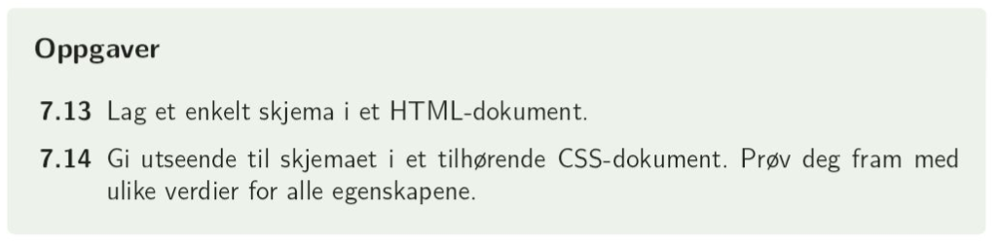

Før vi begynner med php og databaser, kan vi ikke behandle inndata fra skjemaer. Vi kan likevel sette inn selve skjemaet. Taggen for skjema er < form > < /form >. Mellom her angir vi de inputene vi ønsker at brukeren skal fylle ut. I < form > er det viktigste attributtet method: dette sier noe om hva vi skal gjøre med inndataen. Vi bruker GET når det ikke er sensitiv data og FORM når det er sensitiv data. Frem til vi begynner med databaser bruker vi GET for at de innfylte feltene skal vises i urlen.
Koden for et skjema kan derfor være
< form method="GET" >
Skriv inn navn: < input type = "text" name = "navn" > < br >
Skriv inn alder: < input type = "number" name = "alder" > < br >
Hva synes du om denne nettsiden? < input type = "tekst" name = "tilbakemelding" > < br >
< input type="submit" name="send" value="Send tilbakemelding" >
< /form >
Mer om skjemaer kan du lese på w3schools
Skjemaer legges, som vi husker, til som
< form method="GET" >
Navn: < input type="text" name="navn" >
Alder: < input type="number" name="alder" >
Send svar: < input type="submit" name="send" value="Send svar" >
< /form >
Som vi ser, er alle input-elementene inline-elementer, og legges ved siden av hverandre. Dette kan vi overstyre i css:
input{
display: block;
}
Når vi ellers stilsetter skjemaet, har vi valget mellom å stilsettte
form {}/* stilsetter hele skjemaet */
input[type="text"]{} /* stilsetter alle inputfelt av typen text
input[type="number"]{} /* stilsetter alle inputfelt av typen number
input[type="submit"]{} /* stilsettter alle inputfelt av typen submit
I tillegg kan enkeltfelt stilsettes ved bruk av klasser eller id'er.
s. 76: oppgave 7.13 og 7.14
